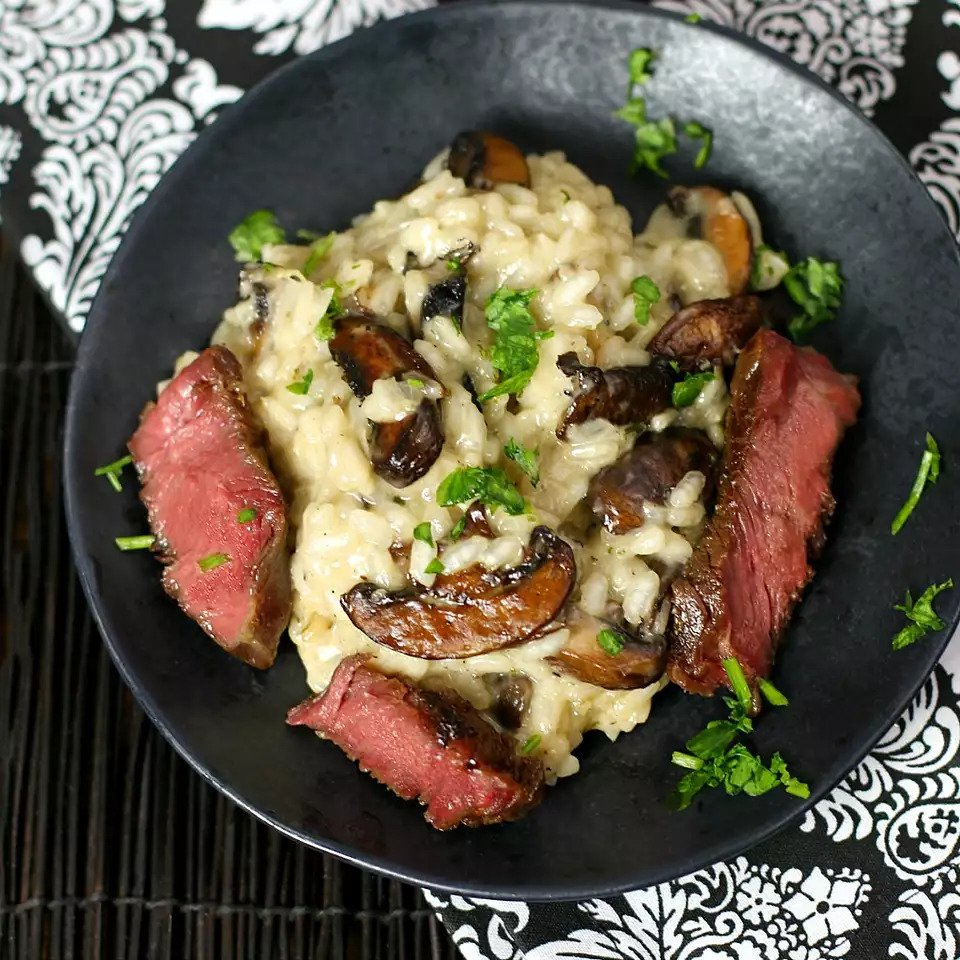

Rib-Eye Steak and Mushroom Risotto

Rib-eye steak and mushroom risotto are perfectly sous-vide steaks with fall-flavored Arborio rice,
full of cheese, garlic, shallots, and creamy, buttery goodness.
Top risotto with Parmesan cheese if desired.
Ingredients
- salt and ground black pepper to taste
- 2 (8 ounce) boneless rib-eye steaks
- 1 tablespoon canola oil
- 3 tablespoons olive oil, divided
- 1 (16 ounce) package white mushrooms, thinly sliced
- 1 (16 ounce) package cremini mushrooms, thinly sliced
- 3 shallots, diced
- 3 cloves garlic, minced
- 1 ½ cups Arborio rice
- ½ cup dry white wine
- 6 cups low-sodium chicken broth, divided
- ¼ cup butter
- 2 tablespoons finely chopped fresh chives
- sea salt to taste
- freshly ground black pepper to taste
Directions
- Preheat a sous vide cooker to 132 degrees F (56 degrees C) in a water bath,
according to manufacturer's instructions.
- Season steaks with salt and pepper and place in a vacuum-seal or heavy-duty freezer bag.
Seal. Drop the bag into the water bath and set timer for 2 hours.
- Remove steaks from bag and place on a paper towel-lined plate. Pat dry carefully on both sides.
- Heat canola oil in a heavy skillet over medium-high heat until it starts smoking.
Add steaks. Cook until nicely browned on both sides, flipping every 15 to 30 seconds, about 90 seconds total.
Transfer steaks to a plate; let rest for 10 minutes. Slice thinly against the grain.
- Heat 2 tablespoons olive oil in a large, heavy saucepan over medium-high heat.
Stir in white mushrooms and cremini mushrooms; cook until soft, about 3 minutes.
Transfer mushrooms and their liquid to a bowl.
- Heat the remaining tablespoon olive oil in the same saucepan over medium-low heat.
Add shallots and garlic. Cook, stirring constantly, until shallots are tender, about 3 minutes.
Add rice and increase heat to medium. Cook and stir until rice is pale golden with nearly translucent edges,
3 to 4 minutes.
- Pour wine into the rice mixture; cook, stirring constantly, until fully absorbed, about 6 minutes.
Add 1/2 cup chicken broth; stir until absorbed, about 3 minutes. Add remaining broth, 1/2 cup at a time,
stirring risotto continuously until liquid is absorbed and rice is tender yet firm to the bite,
15 to 20 minutes more.
- Remove risotto from heat. Stir in mushrooms with their liquid, butter, chives, sea salt,
and freshly ground pepper. Plate the risotto with strips of steak on the side.
Back to Home Page